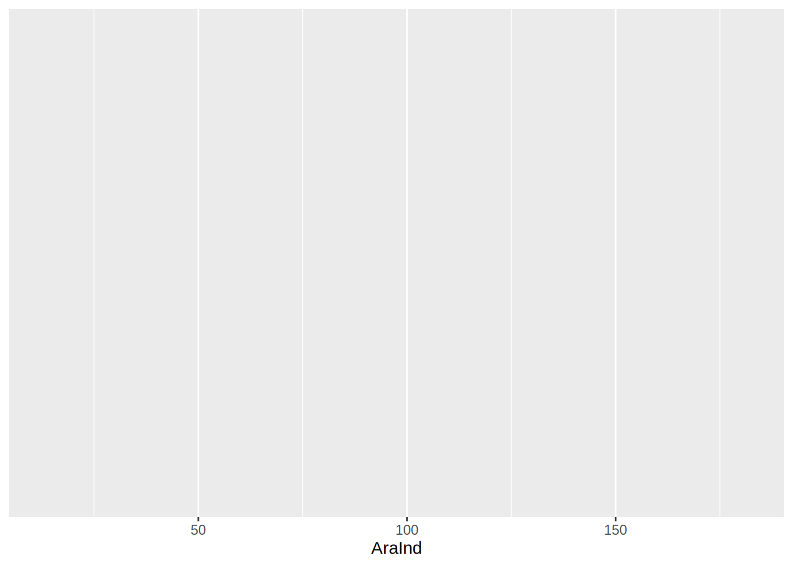
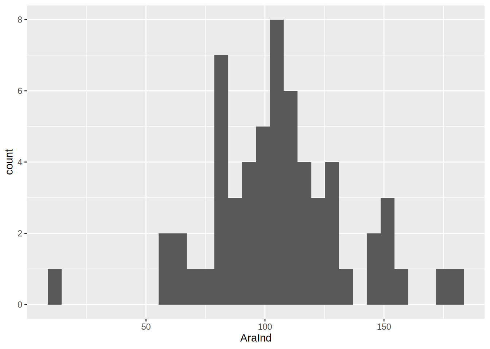
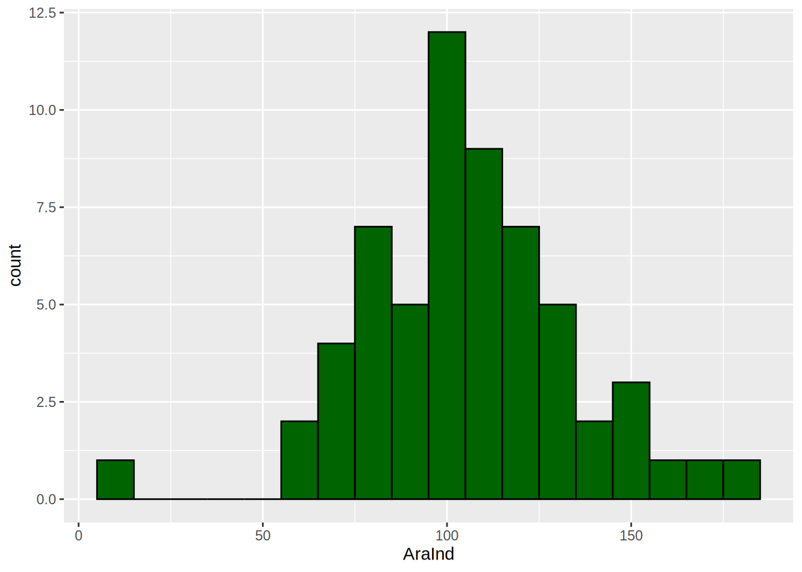
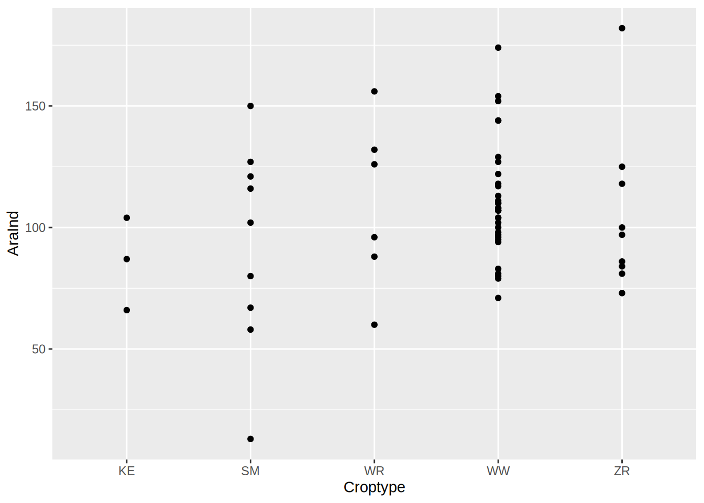
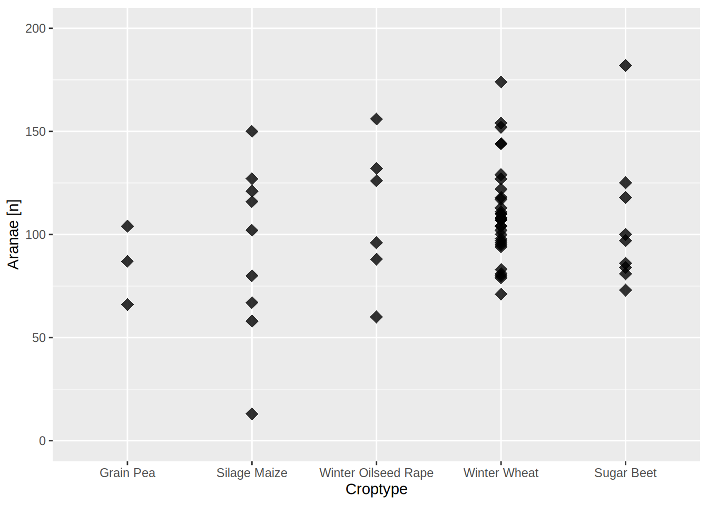
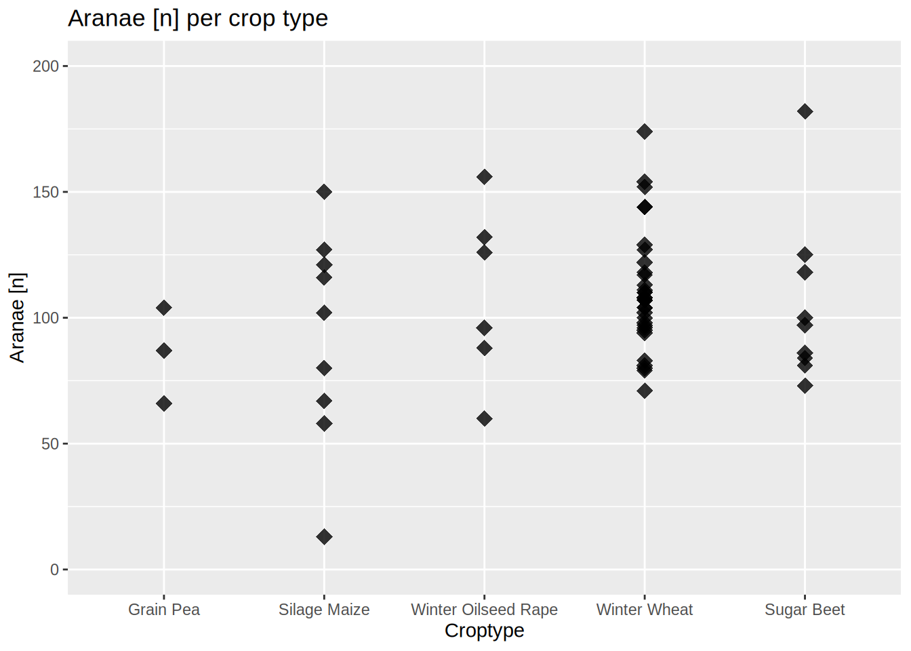
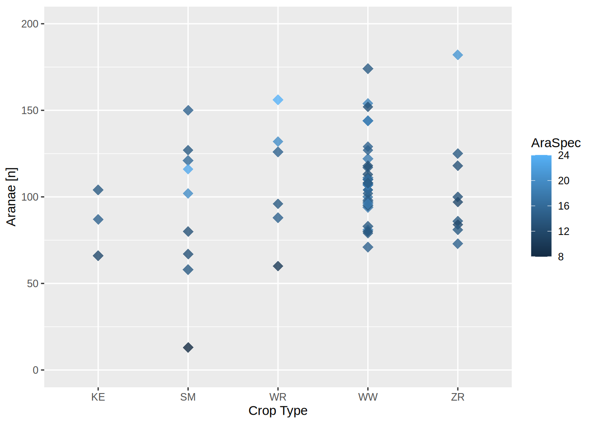
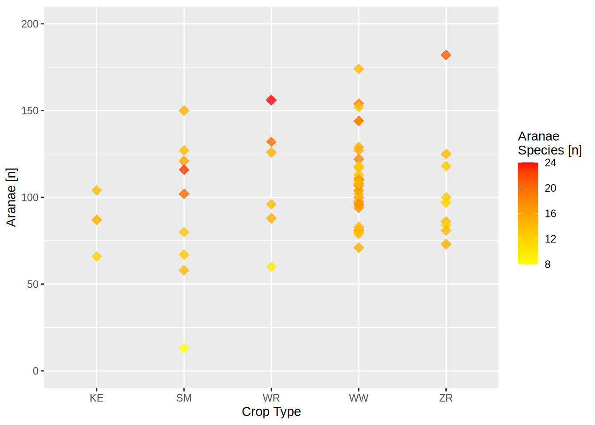
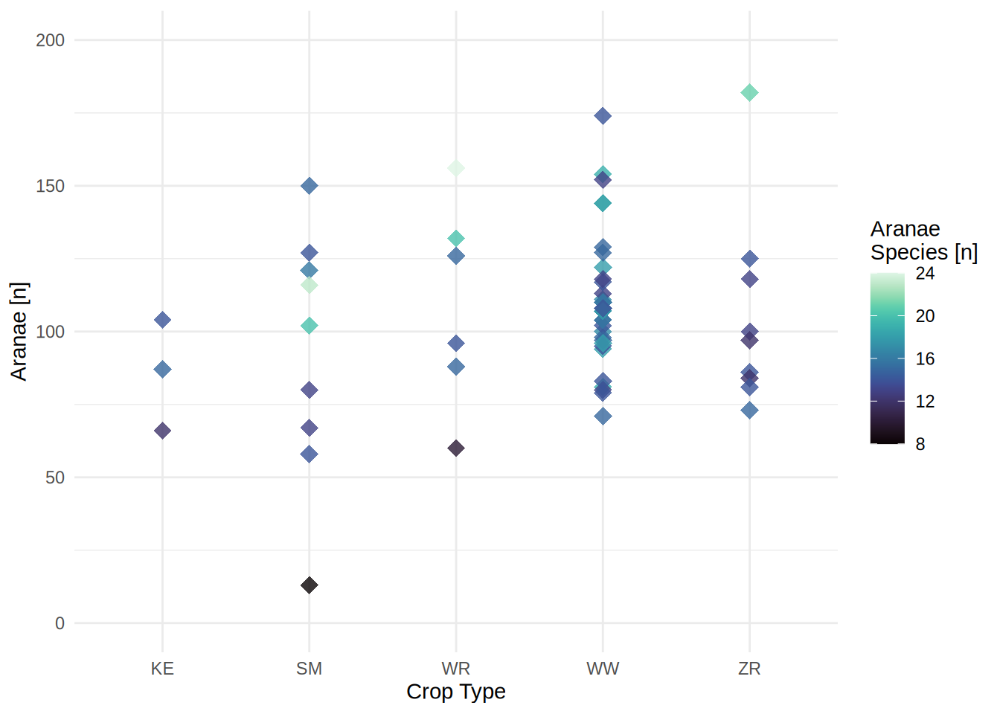
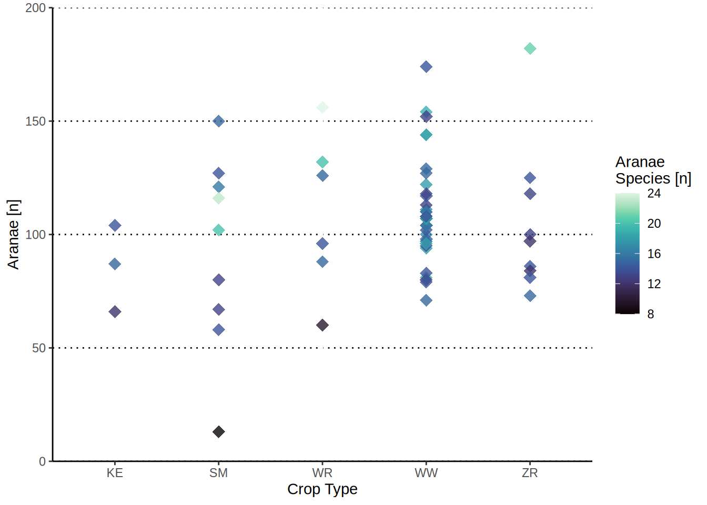

library(ggplot2)
library(viridis) # for better color scales
species = read.csv("data/crop_species.csv")ggplot2
Es gibt nur eine Breitbandleitung ins Hirn und das sind die Augen. David Kriesel
In the course, we used a variety of datasets. All of them have different features and difficulties that we need to keep in mind when we want to visualize parts of the data to point out some interesting facts!
The German Climate Data data has a temporal component and “continuous” measurements. The arthoropode species on crop fields follow the classic plot based design and allows for comparisons between different groups. The trees and districts of Muenster potentially have a spatial component to it but also allow for comparisons of the different species and districts.
The grammar of graphics
Scientific figures and advanced visualization in R are usually done with the ggplot2 package.
- https://ggplot2.tidyverse.org/
- tidyverse package: synergies and integration with e.g. dplyr
- layer based language that are combined with
+ - differentiated by “static” and “dynamic” parameters
- many extensions: https://exts.ggplot2.tidyverse.org/gallery/
- Gallery for inspiration: https://r-graph-gallery.com/index.html
Initialze the plot
Tell ggplot which data.frame is the basis for the plot.
ggplot(data = species)
The mapping argument of the ggplot() function handles which columns of the data should be used for which purpose. To specify this, we use the aes() function (aesthetics). Common things that we specify:
- x
- y
- group
- color
- fill
Here we specify that on the x-axis in our plot represent the AraInd column. As a result we get the proper y-axis, but still no data is shown. For this, we have to specify in which form the data should be depicted.
ggplot(data = species, mapping = aes(x = AraInd))
Geometry types
There are many different geometry types build into ggplot2 and even more from additional packages. The functions to create the geometry layers usually start with geom_. The geom functions also have their own arguments you can specify.
- geom_point
- geom_line
- geom_boxplot
- geom_histogram
- …
ggplot(species, aes(x = AraInd))+
geom_histogram()
ggplot(species, aes(x = AraInd))+
geom_histogram(binwidth = 10, fill = "darkgreen", color = "black")
Different geometry types require more than one aesthetic. E.g. geom_point needs the x and y aesthetics.
ggplot(species, aes(x = Croptype, y = AraInd))+
geom_point()
Axis Formats
The Axis format depends on the type of variable you want to plot. We have to be aware of what scale type we have.
- discrete scale for categorical data
- continuous scale for numeric data
- limits, ticks, labels …
ggplot(species, aes(x = Croptype, y = AraInd))+
geom_point(size = 4, alpha = 0.8, shape = 18)+
scale_x_discrete(labels = c("KE" = "Grain Pea",
"SM" = "Silage Maize",
"WR" = "Winter Oilseed Rape",
"WW" = "Winter Wheat",
"ZR" = "Sugar Beet"))+
scale_y_continuous(name = "Aranae [n]", limits = c(0,200))
We can also save the plot to a object to reuse and modify it later.
araind_plot = ggplot(species, aes(x = Croptype, y = AraInd))+
geom_point(size = 4, alpha = 0.8, shape = 18)+
scale_x_discrete(labels = c("KE" = "Grain Pea",
"SM" = "Silage Maize",
"WR" = "Winter Oilseed Rape",
"WW" = "Winter Wheat",
"ZR" = "Sugar Beet"))+
scale_y_continuous(name = "Aranae [n]", limits = c(0,200))
araind_plot + ggtitle("Aranae [n] per crop type")
Color Scales
With the color and fill arguments in aes() we specify which columns of the data.frame should be represented as a color scale in the plot.
ggplot(species, aes(x = Croptype, y = AraInd, color = AraSpec))+
geom_point(size = 4, alpha = 0.8, shape = 18)+
scale_x_discrete(name = "Crop Type")+
scale_y_continuous(name = "Aranae [n]", limits = c(0,200))
We can specify the colors by adding a scale_color_ layer. Just like with the axis, there are discrete and continuous color scales available!
ggplot(species, aes(x = Croptype, y = AraInd, color = AraSpec))+
geom_point(size = 4, alpha = 0.8, shape = 18)+
scale_color_gradient(name = "Aranae\nSpecies [n]", low = "yellow", high = "red")+
scale_x_discrete(name = "Crop Type")+
scale_y_continuous(name = "Aranae [n]", limits = c(0,200))
Themes
There are many prebuild themes…
ggplot(species, aes(x = Croptype, y = AraInd, color = AraSpec))+
geom_point(size = 4, alpha = 0.8, shape = 18)+
scale_color_gradientn(name = "Aranae\nSpecies [n]",colors = mako(50))+
scale_x_discrete(name = "Crop Type")+
scale_y_continuous(name = "Aranae [n]", limits = c(0,200))+
theme_minimal()
… or you can specify your own:
ggplot(species, aes(x = Croptype, y = AraInd, color = AraSpec))+
geom_point(size = 4, alpha = 0.8, shape = 18)+
scale_color_gradientn(name = "Aranae\nSpecies [n]",colors = mako(50))+
scale_x_discrete(name = "Crop Type")+
scale_y_continuous(name = "Aranae [n]", limits = c(0,200), expand = c(0,0))+
theme(panel.background = element_blank(),
panel.grid.major.y = element_line(color = "black", linetype = "dotted"),
axis.line = element_line(color = "black"))